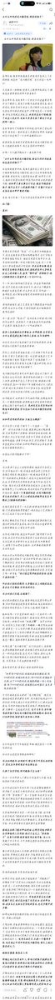

单纯用需求和暴利来解释解网瘾学校的存在还是不足够的，请大家思考一个问题：就算不存在网瘾学校，这些孩子就会有一个“美好”的前程吗？就好像一堆危险品，在没有好的处理办法之前，政府揽到自己手里和交给网瘾学校也没什么区别，如此一来既降低了治理成本，还收获了合格劳动力，干嘛花那个力气取缔呢？


这个温柔满嘴放屁，谎话连篇，我从未见过如此厚颜无耻之人！他开头就暴露了他的反动立场，为什么不听家长话的孩子是问题孩子，你凭什么这么说？按你温柔的话讲，这些孩子确实欠管教，只是管教的方式不对呗？打的太重了，轻点就好了呗？
他所谓的终极解决方案，居然是开办国营戒网瘾学校，何其荒谬！ https://t.co/Ljf3Iqzz4Z https://t.co/i9MNmIOwh7
他所谓的终极解决方案，居然是开办国营戒网瘾学校，何其荒谬！ https://t.co/Ljf3Iqzz4Z https://t.co/i9MNmIOwh7